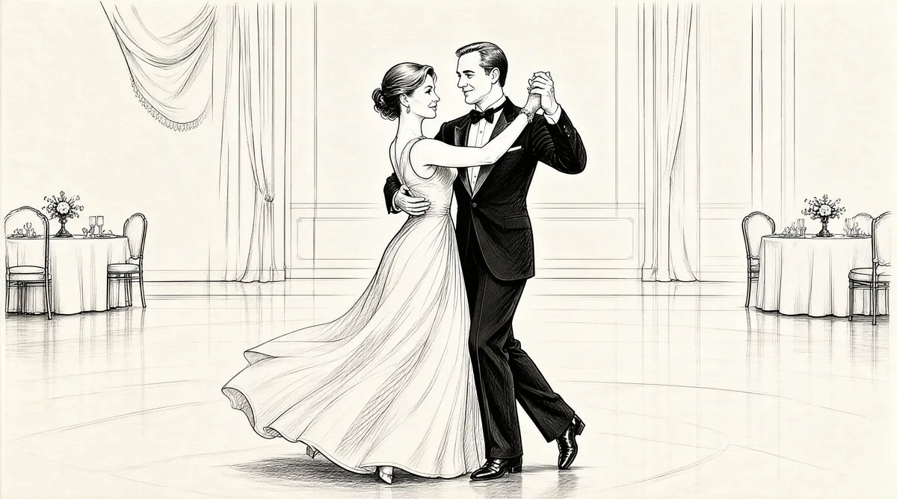

第48章 吮拇指及其严重后果

1991年8月8日星期四下午，巴菲特从塔霍湖驱车来到内华达的里诺，打算同阿斯特丽德和布鲁姆金兄弟一起度过他们一年才共度一次的周末。他盼望这次旅行已经很久了，一想起来心情就无比轻松愉快。当天早晨，约翰·古特弗罗因德的办公室给巴菲特打来电话，询问他在晚上9点到午夜的这段时间会在哪里，有没有时间和他们谈谈。
考虑到这件事有点儿不寻常，巴菲特回答说他要去看一个演出。之后他们告诉巴菲特，希望他在晚上7点半的时候能主动联系所罗门公司的律师事务所——沃切尔–利普顿–罗森–卡茨律师事务所。他略作思考，以为他们打算出售公司。这似乎是一个好消息。股票出手价在37美元左右，接近38美元。这个价位意味着他看重的那只股票可以脱手了，并且从此以后可以与所罗门脱离关系了。古特弗罗因德向来事事咨询巴菲特的意见，也许此刻他正需要一些谈判方面的帮助。
巴菲特和他的同伴在里诺打发掉了一个下午。其间他回忆起一件往事：1980年，有人建议他收藏雷诺的老爷车——来自美国国家汽车博物馆的老式汽车。这些汽车共有1400辆，其中包括一辆1932年的劳斯莱斯、一辆1922年的梅赛德斯跑车、一辆1932年的布加迪跑车、一辆1955年的法拉利和一辆1913年的皮尔斯银箭。所有汽车要价不到100万美元。他心动了一下，但是最终还是放弃了。几年之后，收藏的部分汽车——大约几百辆陆续被拍卖，总额高达6900万美元。最近，其中的一辆皇家布加迪被一个休斯敦的房地产开发商以650万美元收入囊中。
7点半之前，他们返回了塔霍湖。“我们回到旅馆后，其他人去了牛排餐厅。我告诉他们‘等我一会儿’，然后我在外面找了一个公用电话拨了他们给我的号码。”巴菲特期望能连线到古特弗罗因德，但是古特弗罗因德这会儿正在从伦敦飞回纽约的飞机上。他到伦敦是为了英国电信公司的一个投资项目。不巧的是，他那班飞机晚点了。巴菲特拿着电话等了很长时间，而电话的那一头正在讨论是否要等到古特弗罗因德抵达后再详谈。最后，汤姆·斯特劳斯和唐·福伊尔施泰因接过电话，告诉巴菲特是怎么回事，或者说是给了巴菲特一个说法。
49岁的汤姆·斯特劳斯是古特弗罗因德的左右手。早在5年前，也就是1987年股市不景气期间，他被任命为所罗门公司的总裁。1在管理公司国际业务的同时，他还要负责理顺公司的证券部，而后者无疑是一块烫手的山芋。但正如后来报道揭示的那样，在所罗门内部，管理完全是混乱的。各部门负责人直接向古特弗罗因德汇报，而且其汇报范围与他们向其他上司汇报的范围毫无二致。在所罗门，谁能创造收益，谁就有发言权。严格地说，斯特劳斯是所罗门的总裁，但是因为他的职位太高，他看起来就像是高悬在交易厅上空的一个氢气球，各部门负责人不动声色地把他排除在外了。
唐·福伊尔施泰因是所罗门法律部经理。他曾经是美国证券交易委员会的一名重要成员，并被公认为是一个深谙此道的律师。2他是古特弗罗因德的盟友，被称为“黑暗王子”，3因为他总是在幕后做一些不光彩的工作。所罗门的经理人做起事来向来毫无忌惮，而且总是与福伊尔施泰因的手下，包括交易部助理律师扎卡里·斯诺一起行事。这种体制使法律部看起来很强大，但又很软弱——很大程度上，他们需要负责所罗门内部的几乎所有事务：从处理内部的小摩擦到对外部事件做出回应。所罗门这套习惯已经根深蒂固，就连福伊尔施泰因本人都是一个交易员：他还负责管理一个由几个董事联合创办的酒类企业。他的传真机不断地向这些董事发送文件，告诉他们酒类产业如何利润丰厚，以及红酒大多数是被买者收藏而不是被喝掉等信息。4
然而这个晚上，没有人喝酒庆祝。福伊尔施泰因知道巴菲特和古特弗罗因德是好朋友。古特弗罗因德本应该亲自接电话说明情况，但此时这不得不由福伊尔施泰因代劳，他为此感到很尴尬。他和斯特劳斯用了大量的事实告诉巴菲特，所罗门出了什么问题。沃切尔–利普顿事务所的一项调查表明，保罗·莫泽尔——所罗门公司国债部门负责人，在1990~1991年间多次违反美国财政部的竞拍规则，暗箱操作。莫泽尔和他的同谋，即他的副手，已经被停职，并且公司正逐级上报此事。
保罗·莫泽尔到底是什么人？巴菲特想。
36岁的保罗·莫泽尔因为在芝加哥销售证券的优秀业绩被纽约方面相中并提拔上来。他对工作的专注比得上激光灯。每天太阳还没升起，他就已经开始了一天的工作。他会在卧室一边浏览交易屏幕一边与伦敦方面通电话，然后从他位于炮台公园地区的小公寓飙车绕过几个街区，来到世界贸易中心的7层。那里有所罗门新的豪华交易大厅。他会同时盯着几个大屏幕，监督20个操盘手交易，直到太阳落山。这些操盘手大多比瘦而结实的他高很多。莫泽尔很聪明，而且极富闯劲，但同时他给人的印象又是若有所失、缺乏安全感——他是个有些古怪的人。尽管他在长岛长大，但是同圆滑的纽约人比起来，他更像是来自中西部地区的一个涉世不深的人。他曾经在梅里韦瑟手下担任交易员，后来在证券发行部主管克雷格·科茨辞职后接手了主管这一职位。现在他仍然效力于梅里韦瑟，却处于昔日同事圈的外围。另外，鉴于巴菲特和董事会要求增加收益的强大压力，古特弗罗因德把外汇交易部也交给了莫泽尔打理。5莫泽尔在短短的几个月内就将这个黑洞填满，并使它开始赢利。这让古特弗罗因德对其大为赞赏。
莫泽尔既粗鲁又高高在上。他觉得跟自己比起来，别人都是傻瓜。可是他周围的同事大都很喜欢他，因为他不像所罗门臭名远扬的抵押部门经理人那样往雇员身上扔食物，或者命令他们一次买回12个比萨。有时候他甚至会和员工们亲切交谈。
由于工作卖力，莫泽尔那年拿到了475万美元的报酬。这是一笔大数目，但他并不满足。他的目标是世界首富，这点儿财富显然不能满足他。当他得知自己的前任拉里·希里布兰德从一项秘密交易中获得了2300万美元的回扣时，他忽然开窍了。过去他比别的交易员挣得多6，现在他更要远远超过他们。7他要求对自己管辖的部门免予审计，言外之意就是说在账目方面他永远不会疏忽。8
在所罗门内部，莫泽尔是少数几个有机会经常同达官贵人们商谈经济问题的负责人，他几乎每天都要同美联储通电话，并且定期与财政部官员在麦迪逊酒店聚餐。作为美国“主要交易商”所罗门的代表，他为政府提供各种市场方面的信息和建议，同时，无论政府何时决定出售国债，他永远站在第一线充当最大买家，其忠实度堪比坐在教皇右手边的红衣主教团的成员。
只有主要交易商才有资格直接从政府那里购买国债，别人只能通过他们才能竞标。他们扮演着中间人的角色。如此一来，这些大型交易商垄断了国债销售市场，并占据了大多数市场。他们了解政府和客户的需求，从供求的差价中牟利。但是，要想走到这一步，需要获得政府相当的信任。而政府方面则希望这些交易商能像教徒做弥撒那样虔诚——既要喝圣餐酒，又不能喝醉，让教主难堪。
拍卖会临近的时候，主要交易商会通过电话统计客户的购买量。莫泽尔会根据市场的需求量对外提出竞标额度。在拍卖会当天下午1点钟之前的几秒钟，交易商会打电话通知那些站在美联储大楼电话亭里的交易员，后者快速记下指令，然后直奔位于美联储的被人围得水泄不通的竞标箱。1点整的时候，工作人员将封住箱口，这标志着竞拍结束。几十年来，政府一直沿用这套古老的竞标程序。
竞价市场的紧张与生俱来，它是财政部与交易商在价格、数量方面反复博弈的结果。财政部希望以尽可能高的价格拍卖尽可能少的国债，而交易商则会尽可能控制交易价格和交易数量，在最大限度扩大自己市场份额的同时保持转手利润。交易商在出价时会精确到千分之一美元——这听起来似乎微不足道，但是吃掉足够多的千分之一就会发大财。如果是1亿美元，千分之一就是10万美元；如果是10亿美元，那就是100万美元。同时，由于国债没有抵押债券或公司债券那样大的利润空间，所以，为了有利可图，必须进行大宗交易。
要把这桩大买卖做成，政府就必须和主要交易商合作，因为他们更了解市场，并且能发行自己的证券。而截至那时，所罗门是最大的交易商。20世纪80年代早期，财政部允许独立的大公司最多购买每次发行量一半的国债。这就为所罗门公司独霸拍卖会提供了方便。所罗门将买下的国债囤积起来，并借此“压榨”那些手头国债“短缺”的公司——他们之前预计国债价格会下降，因此卖出了手头的债券，从而导致自身所需的债券数额不足。这样一来，国债价格就会迅速提升，短期出售者后悔不迭，而交易大厅里却呼声一片——所罗门从中获得了巨大的利润。在华尔街，它就像一位挥舞着权杖的国王。通过囤积居奇，本来利润微薄的国债变得利润丰厚起来，原先坐冷板凳的国债交易员精神也为之一振。
为了平息怨言，财政部降低了上限，规定单个交易商最多只能购买35%的国债，这就增加了囤积居奇的难度。尽管小型的价格操纵时有发生，但所罗门再也难以独霸市场。所罗门自然不欢迎新政策的实施。在竞购数额超过计划销售额度的时候，财政部会按竞标者每人申请的比例销售，这意味着想要买到35%的国债，竞标人的竞标额要超过35%——这个规定实在诡异至极。
政策的严格执行增加了所罗门国债部门的创收难度。然而，上有政策，下有对策。1990年，莫泽尔先后两次考验了财政部的耐心。他的竞标数额超过了拟发行国债的100%。竞拍负责人迈克尔·巴沙姆警告他不要再犯这样的错误。莫泽尔为此盛情邀请副财长鲍勃·格劳贝尔共进早餐，并美其名曰“赔罪”。他找了一堆借口，但没有一句是承认自己过错的。他声称他所做的超标竞拍对政府有利，因为它增加了国债的需求量。9巴沙姆并没有因此息怒，相反他制定了更严格的规定——要求任何公司的竞标数额绝对不能超过发行数额的35%。根据这项规定，所罗门连35%的国债都买不上了。
这时，福伊尔施泰因为巴菲特念了所罗门打算在第二天早上将要发布的一篇新闻稿。相关内容也会通知当晚所有参加董事会会议的成员。它记录了莫泽尔挑衅巴沙姆的全过程：他在1990年12月和1991年2月的两次竞拍中，继续超过规定底线竞标。
福伊尔施泰因给了巴菲特一份影印稿，并且告诉巴菲特，他已经同在明尼苏达州度假的芒格详细谈过了。10芒格提到了所谓的“吮拇指”，并补充道“人类惯于那样”。11巴菲特知道，在芒格的字典中，“吮拇指”表示浪费时间，但是他没有特别在意。福伊尔施泰因没有提及他和芒格谈话的其他内容，而巴菲特也并不在乎到底谁在“吮拇指”。七八分钟后，他挂断了电话，这时他意识到事情好像有些不对，不过他并不认为有必要立刻跟芒格谈谈。他决定过完周末再去找芒格。此刻他要做的是在塔霍湖好好放松。他走回餐厅，和阿斯特丽德、布鲁姆金兄弟一起吃牛排，随后他们去看了琼·里弗斯和尼尔·萨达卡的演出。
在巴菲特看演出的时候，古特弗罗因德的飞机终于着陆了。当天晚些时候，古特弗罗因德、斯特劳斯、福伊尔施泰因与美国证券交易委员会的高级官员理查德·布里登、比尔·麦克卢卡斯进行了会谈。此外，他们三人还给纽约储备银行行长——身高6英尺4英寸（约1.93米）、健壮的杰拉德·科里根打了电话。
古特弗罗因德和斯特劳斯分别用证据向布里登、麦克卢科里以及科里根作了汇报，其内容比所罗门董事们所知的更为详尽。莫泽尔的问题远非超标竞拍。在1991年2月财政部的竞拍上，为了达到35%的数量，他假借客户的名义购买国债，然后将这笔国债隐藏在所罗门的账目中。事实上，他在这次竞购中并不只有一个伪造行为。至于为什么所罗门没有及早上报，他们的解释是监管疏忽。不过，美国证券交易委员会和财政部还在对莫泽尔事件进行调查，因为莫泽尔在5月份的两年期国债市场上掀起了更大的波澜。莫泽尔的行为处于监管人员的严查之下，所罗门公司同样未能幸免。监管疏忽显然不能说明问题。监管人员怀疑所罗门内部存在着系统性问题。
不管实情怎样，这些坦白令财政部和美联储的官员异常尴尬。所罗门居然没有开除莫泽尔，并且尚未制定任何补救措施，科里根对此感到非常震惊。他希望公司在一两天内做出决定，这样他还能“力保判处缓刑，并且让事情到此为止”。他后来回忆说，他曾经告诫古特弗罗因德和斯特劳斯“保持耐心和冷静”，并且有义务立刻向公众公布这些信息。以他的经验，他觉得这件事很可能会演变成为“非常非常严重的问题”。12然而在他看来，古特弗罗因德和斯特劳斯好像根本没有意识到事情的严重性。否则古特弗罗因德为什么那个时候还飞赴伦敦，没有想到要与巴菲特、芒格联系，公司其他董事也都分散在各地。
第二天是8月9日，星期五，巴菲特、阿斯特丽德、布鲁姆金兄弟一道在当年的西部淘金镇——弗吉尼亚城广阔的街道上散步。巴菲特给他的办公室打了个电话，被告知没有紧急情况，所罗门公司也没有打电话找他。所罗门在新闻稿中尽量轻描淡写，但是新闻稿发布之后，股票还是下跌了5%，跌至34.75美元。
星期六，巴菲特在明尼苏达星岛的小木屋里与芒格通了电话。芒格向他揭示了更详细的、令人警觉的内幕。福伊尔施泰因从众多材料中选取了一些案例，指出“部分问题在去年4月份就暴露了”。当同样的话说给包括巴菲特在内的其他董事听时，他们并没有觉察到其中的特别之处，因此没有显露出特别的情绪。13但芒格却从那些陈词滥调和消极的语调中听出了一些东西，“应当知道”是什么意思？到底应当知道什么？谁应当知道？芒格大为光火。14福伊尔施泰因因此被迫将更完整的细节告诉芒格，具体内容与科里根知道的版本相差无几。15
正如福伊尔施泰因提到的那样，莫泽尔4月份就收到了财政部关于调查其竞拍案的信函。16由于意识到游戏升级超出了他的掌控范围，他在4月25日向老板梅里韦瑟坦白了整个过程：在2月份的竞标中，为了保持35%的底限，他不仅以所罗门的名义进行了投标，还以其他客户的名义投了标。17莫泽尔向梅里韦瑟发誓说这是唯一一次，并保证不会再犯。
梅里韦瑟很快意识到，事情肯定到了无法收场的地步，要不然莫泽尔不会忽然来坦白。于是他随即把情况汇报给福伊尔施泰因和斯特劳斯。4月29日，他们三人一道向古特弗罗因德转述了莫泽尔的交代。根据他们后来的回忆，古特弗罗因德听完后满脸怒气地离开了现场。
也就是说，截至4月份，古特弗罗因德、斯特劳斯、梅里韦瑟、福伊尔施泰因以及公司的法律顾问都知道了莫泽尔的所作所为。
当时福伊尔施泰因已经提醒过古特弗罗因德，莫泽尔的行为可能已经构成犯罪。他认为公司这样做可能涉嫌违法，同时他确信，如果公司不采取任何行动，无异于和政府硬拼，因此，必须上报给美联储。古特弗罗因德表示会严肃处理这件事。但奇怪的是，他并没有拿出任何确切的方案——他没有造访美联储富丽堂皇的意式府邸，告知科里根事情的来龙去脉。更要命的是，得出冒名竞标是“唯一一次越轨行为”的结论后，他们居然将莫泽尔继续留在管理层。听完这些，芒格说：“这就是在‘吮拇指’，人类一直惯于这么做。”他后来解释说：“所谓的‘吮拇指’，是说本来必须采取行动的时候，你却只是干坐在那儿苦思冥想，这就是浪费时间。”18
芒格将自己对那篇新闻稿的疑问告诉巴菲特：难道不应该告知公众，管理层早就知道了事情的真相吗？福伊尔施泰因的回答是：“的确应当告诉公众。之所以没有那么做，是担心会影响到公司的资金运转。”所罗门借有数百亿美元的短期商业贷款，并且一天比一天多，如果消息公布出去，贷款方也许会拒绝续借。芒格认为，“资金困难”将引发“财务恐慌”。19缺乏坚持底气的芒格最终退让了。与此同时，他与巴菲特达成共识，一定要揭露更多的真相。对即将到来的困难，他们已经从心理上作好了准备。
两天之后的8月12日，星期一早晨，《华尔街日报》登出了已经证实的一些细节，标题相当醒目：“所罗门违规操作中期国债，导致市场混乱；公司一次竞标获得的额度可能达到85%；调查正在进行——老板是否对此一无所知？”这篇报道还指出了此事可能招致的诉讼：“操纵市场”、“违反《证券法》中的反欺诈条款”、“向联邦当局虚假陈述”、“账簿记录违法”等民事指控以及违反《电邮欺诈法》等刑事指控。20
古特弗罗因德给巴菲特打了一个电话，语调相当平静。巴菲特猜测，他大概以为整件事情的后果不过是股票下跌几个百分点罢了。联想到期刊上暗藏杀机的报道，巴菲特觉得事情不可能这么简单，古特弗罗因德的态度说明他仍然认为此事可以轻松摆平。21这与他上个星期的表现颇为一致。在巴菲特施压要求知道更多真相后，他被告知所罗门的财务状况已经遇到了麻烦——这意味着公司的贷款方已经开始躁动不安了。22
同时，芒格试图和沃切尔–利普顿律师事务所的马蒂·利普顿——古特弗罗因德的好友、所罗门公司的外部法律顾问取得联系。利普顿正在为所罗门的麻烦四处奔走，芒格用福伊尔施泰因的电话拨通的是利普顿交由佳士得–苏富比拍卖的房子里的电话，利普顿的妻子在那里，利普顿不在。23芒格知道利普顿离不开电话，就像巴菲特离不开他的《华尔街日报》一样。那时候手机还很罕见，连公司的合伙人都没有配备。最后，芒格把电话打到利普顿的办公室。事情过后，他向美国证券交易委员会汇报说：“利普顿的办公室拥有我所知道的历史上最好的电话系统，无论是白天还是晚上都能联络到马蒂·利普顿——就算他正忙于谈情说爱，你也能找到他。”24
至于利普顿被芒格找到时心情是否平静，这一点我们不得而知。芒格要求利普顿再发一份新闻稿给他，因为第一份材料不够充分。利普顿同意在周三召开董事电话会议时讨论此事。
毋庸置疑，美联储的科里根对所罗门保持沉默的态度相当不满。8月12日，星期一，他决定让他的执行副主席彼得·斯藤莱特给所罗门起草一份公函，通知他们，由于没有及时披露内幕，所罗门给美联储带来了很大的麻烦，因此，美联储对于能否与所罗门继续保持合作关系深表怀疑。美联储希望所罗门在10天内将他们所知道的内情和盘托出。
结合科里根之前与斯特劳斯、古特弗罗因德的谈话，这份公函无异于最后通牒。如果美联储中断所罗门与政府的商业往来，客户、贷款方将纷纷上门提款。这样做的严重后果会迅速显现出来。
所罗门的资产负债规模在全美众多公司当中排名第二——它比美林证券、美国银行及美国运通公司的规模更大。它的所有贷款当中几乎都有短期借款，而这些短期借款的出借方在几日或者至多数周内就能抽回投资。公司只有价值40亿美元的股票，而贷款却有1460亿美元。每天，资产负债表内都会有几百亿美元，甚至多达500亿美元的应付账款（交易已经完成但尚未结算）。一有不慎，就会引起地动山摇的后果。同时，所罗门还有高达数千亿美元的账外衍生债务——包括利率掉期交易、外汇掉期交易以及期货合同——这个巨大而复杂的交易链牵涉到全球各地众多的合作伙伴，并且这些合作伙伴同样还有数不清的其他交易业务，这正是纠缠不清的全球金融网络的一部分。一旦这些资金消失，所罗门的一切资产将被变卖。然而，资金可以一下子撤走，资产却得花上一段时间才能清算完毕。同时，政府缺乏全国性的政策来向这些摇摇欲坠的投资银行提供贷款，因为它们的规模“太大而不能倒闭”。这家公司也许会在一夜之间变成无底深渊。25
科里根坐在椅子上，他相信斯藤莱特的公函会让所罗门的管理层清楚地意识到，枪已经上膛并对准了他们。识相的话，他们必须在第一时间做出回应。
同时，在新闻稿发布和《华尔街日报》做出报道后，所罗门内部谣言四起。星期一下午晚些时候，所罗门在一层大厅召开了全体员工会议。近500人参加会议，同时所罗门在全球各地的员工也都观看了现场直播。古特弗罗因德和斯特劳斯向员工们披露了所罗门平静的外表之下隐藏的巨大危机。之后，证券发行部经理比尔·麦金托什被叫到楼上古特弗罗因德的办公室。当他到达那里的时候，他发现古特弗罗因德、斯特劳斯和利普顿三个人表情严肃地坐在里面。之前，他已经来过一次，意想不到的是，他们征询了他对局势的看法。麦金托什认为公司有必要对外做出更多解释，在他看来，员工会议和新闻发布会会给人一种误导。26这一次，他和助理律师扎克·斯诺一起被委派执行一项重要任务——负责撰写新的新闻稿。
第二天一早他们就动笔了。中午时分，麦金托什向刚从公司亚洲分部回来的投资银行部的副董事长德里克·莫恩作了汇报。莫恩得知，他们正在经历“暴风雨之前的平静”。他找到了斯诺，拍了拍他的肩，让他最好向自己坦陈一切。
就算他不开口，斯诺也会主动对他和盘托出。既然莫恩已经提出来，斯诺就更无异议，将幕后经过原原本本地告诉了他：莫泽尔4月份首次坦白了他在2月份竞拍会上的所作所为后，尽管福伊尔施泰因一再强调莫泽尔的行为已经构成犯罪，梅里韦瑟还是力保莫泽尔——这个内幕斯诺也是通过秘密途径才知道的——一个月后，莫泽尔仍然在管理层留任。福伊尔施泰因不断建议古特弗罗因德将此事上报监管当局，古特弗罗因德虽然答应，却一直没有采取任何实质行动。现在梅里韦瑟因为隐瞒莫泽尔的罪行被起诉，据估计他很可能因此辞职。
在此之后，莫泽尔还申请过一笔资金，希望参加5月底的两年期国债竞拍，他的竞标额又一次超过了规定的销售总额。尽管根据申请，这笔资金的一部分要用来为客户竞标，但所罗门的财务主管约翰·迈克法兰并没有轻易点头。他觉得这是一个危险的信号，并且立即同斯诺、梅里韦瑟召开了一次会议。斯诺还向上司福伊尔施泰因汇报了此事，福伊尔施泰因也认为这是一个无理的要求。最终，他们拒绝拨款给莫泽尔。27
但是，莫泽尔还是设法达成了他的心愿。28他成功地躲开了监督者，非法申请参加了竞标并因此囤积了大批国债。事实上，所罗门公司获得了这批国债中的87%，它和一些客户共同控制了这笔两年期国债的发行并且推动其价格暴涨。29这一轮“操纵”给其他公司带来的损失高达1亿美元，一些小企业因为遭受重创不得不宣布破产。30
在所罗门内部，“操纵”引发了广泛的担忧。同行们也开始在新闻媒体上将所罗门称为“华尔街的海盗”。董事会成员(包括巴菲特在内)在一次会议上对公司操纵两年期国债市场的行为进行严厉指责。福伊尔施泰因要求斯诺对6月份的“操纵”事件开展内部调查。调查发现，竞拍之前，莫泽尔与两位对冲基金客户共进了晚餐，而这两位客户参与了这次的竞标活动。这次聚餐被指责存在勾结和操纵市场的嫌疑，但由于缺少证据，莫泽尔成功地躲过了一劫。31为了弥补同财政部和美联储因“操纵”事件而受损的关系，古特弗罗因德作了一系列安排。6月中旬，古特弗罗因德拜见了副财长格劳贝尔。他在沙发上一边大口抽着雪茄，一边对格劳贝尔表示遗憾，提出愿意配合财政部尽量减轻事态的恶化。但同时他仍在为莫泽尔辩护，认为后者没有蓄意操纵5月份的竞拍。而且他还隐瞒了他所了解到的其他情况，包括莫泽尔此前操纵竞拍的劣迹。然而，鉴于5月份以及先前“操纵”行为所引起的严重后果，美国证券交易委员会和司法部反垄断局在没有知会所罗门的情况下启动了对所罗门公司的调查。
与格劳贝尔会谈大约一周后，古特弗罗因德、斯特劳斯和梅里韦瑟开会商量是否要向财政部坦白2月份的竞拍事件。考虑到5月份“操纵”事件引发的风波还未平息，他们认为时机还不成熟，因而决定保持沉默。不久之后，他们就收到了证券交易委员会的来信，要求他们对5月份竞拍案做出更详细的解释。这封信第一次正面提示他们，这次两年期国债违法交易引发的后果不会因为时间的推移而消逝，反而可能会愈演愈烈。任何收到这封询证函的人都会因为美国证券交易委员会忽然对国债交易部的运作产生兴趣感到紧张。
两天后，古特弗罗因德飞往拉斯韦加斯查看所罗门拥有的几处房产，顺便到奥马哈拜访了巴菲特。由于事先对这次行程并不知情，斯诺没有告知莫恩此事。不过，巴菲特补充了其中的细节。
我到机场接他。约翰在办公室待了差不多一个半小时。有将近一个小时他在打电话，剩下的时间我们聊了聊。他语焉不详，结果到后来我们什么都没谈出来。奥马哈会面毫无意义，但是他的确没什么好说的。
由于不太了解他的来意，巴菲特请古特弗罗因德吃了个便饭，然后一同造访了内布拉斯加家具城附近巴菲特刚刚买下的波仙珠宝店。珠宝店的老板现在是艾克·弗里德曼，B夫人的侄子，他们俩就像是一个模子刻出来的，只不过他的块头更大。
弗里德曼把古特弗罗因德领到被称为“中心岛”的奢侈品区。古特弗罗因德为妻子挑了一件价值6万美元的珠宝。古特弗罗因德后来说，他买下这么贵的商品让巴菲特大为震惊。32随后，他又注意到刻意摆放在“中心岛”正后方的高档手表，走过去看了看。比起手表来，弗里德曼更乐意多卖几件贵重首饰，他对古特弗罗因德说：“手表容易弄丢或者摔坏，所以没必要花大价钱去买。”他看了一眼古特弗罗因德手腕上做工精致的手表，问他花了多少钱，古特弗罗因德说了一个价。
“1995美元，”33弗里德曼又重复了一下，“嗯，你被骗了，约翰。”
你真应该看看当时约翰脸上的表情。
戴着他新买的手表，古特弗罗因德在6月底的时候回到了纽约，并把用深紫色丝带系着盒子的珠宝送给了妻子苏珊。
不久后，也就是7月初，司法部反垄断局正式通知所罗门公司，对前述证交会信函中提到的其两年期国债竞拍事件进行调查。古特弗罗因德终于紧张起来，斯诺说，他聘请马蒂·利普顿所在的沃切尔–利普顿律师事务所——所罗门的外部法律顾问——对5月份“操纵”事件的来龙去脉进行调查。34所罗门内部员工对“操纵”事件众说纷纭。一些人认为债券市场本来就很容易发生合谋。交易商的任务就是同客户合作，向市场注入大量资金。这就难免会发生“操纵”事件。只不过这次的影响更大罢了。这分明就是财政部想要给所罗门点儿颜色瞧瞧：谁让它这么多年来为所欲为呢？就像《说谎者的扑克牌》一书中所描述的，招摇撞骗者最终将难逃厄运。35
但也有人认为是莫泽尔玩过了头。他一再藐视财政部，这才招来了“杀身之祸”。他们不明白的是，既然他与巴沙姆的不和已经众所周知，莫泽尔为什么还要让事态恶化下去？后来的疑问就更多了。既然莫泽尔（已经被判处缓刑）早就被告知自己的行为“可能触犯了法律”，他为什么还敢如此胆大妄为地嘲弄财政部——他闹出的这档子事登上了各大财经报纸的头条，难道只是想吸引更多的注意吗？36
负责向福伊尔施泰因报告交易情况的斯诺现在受命对5月份“操纵”事件进行内部调查。斯诺6月份曾因膝盖手术请了一段时间病假，他和福伊尔施泰因都没有参加格劳贝尔的会议，因此不知道他们在会上做出的推迟上报莫泽尔罪行的决议。37当他7月份回到工作岗位上的时候，他立刻发现公司出了事，而之前他却一无所知。人们开始忙于各种各样的会议，他对此惴惴不安。一天晚上，他做了个梦。第二天一大早他就到福伊尔施泰因的办公室，告诉后者他梦到他们一起给巴菲特打了电话，向他揭露操纵竞拍的事，因为他俩对古特弗罗因德和斯特劳斯的无动于衷都相当不满。
福伊尔施泰因斜着眼睛看了看斯诺，“不，不能这样做。”因为他仍在试图说服古特弗罗因德，而向巴菲特坦白意味着所有的努力都将白费。38斯诺并不打算用这个梦来威胁福伊尔施泰因——如果福伊尔施泰因还不行动，他将越级直接上报巴菲特。可是梦一说出口，他就发现福伊尔施泰因已经误会了。39
开始调查工作后不久，利普顿律师事务所的调查人员就带着5月份“操纵”的初步调查结果回来了。但直到此时，调查人员才了解到，高层管理人员早在4月份就已经掌握了莫泽尔2月份非法竞拍的事实。
回过头来看这件事，所罗门当时的情况已经极其糟糕了。在获悉福伊尔施泰因称之为“实质犯罪”的莫泽尔非法竞拍的情况后，高层管理人员仍然同意了梅里韦瑟的求情，并且没有经过调查就轻信了莫泽尔所说的“没有前科”，也没有给予莫泽尔任何形式的惩罚。他们留任了莫泽尔——为他5月份再犯提供了机会。而在5月份事件之后，所罗门公司的处境变得更加不妙。既然他们已经知道了莫泽尔先前的问题，为什么拖延至今才向政府说明情况呢？这让人们不得不怀疑所有高管人员都在沆瀣一气。更成问题的是，古特弗罗因德和格劳贝尔虽然在6月份的会谈中谈到5月份的“操纵”事件，但是却对之前的问题只字不提。现在，正如斯诺对莫恩所说的那样，一旦事件升级，所有相关人员都会这样为最初的拖延开脱：当时看来，事件只是一个单独的小事件，并没有给客户和政府带来不良影响和伤害。站在生意人的立场上看，上报没有任何意义。40古特弗罗因德说，考虑到生意场上的压力，他没有把事情想得太严重。41
不幸的是，他错了。调查人员不仅发现莫泽尔乐策划了2月份的非法竞拍案，又查出了另外5宗造假案。42其中两次违规投标是最近发现的。斯诺告诉莫恩，在前一天晚上内外部律师都参加的会议上，公司对员工们也只做出了部分解释。斯诺一再强调要披露高层早就知情的事实，但是被无情地拒绝了。古特弗罗因德说：“我会认真斟酌的，你做好你的本职工作就行了。”43
甚至在从斯诺那里得知整个事情之前，莫恩就已经甚为担忧了。自第一篇新闻稿发布后已经过了7天。在这7天时间里，各种有关所罗门的麻烦事成为媒体津津乐道的话题，一件件竞标造假案被纷纷揭开、公司股价不断下跌，古特弗罗因德和斯特劳斯也终于疲于应付。当斯诺对莫恩讲完莫泽尔的违规行为以及其他人的无动于衷后，莫恩站起来捶了斯诺一拳，确定没有其他隐情后下楼来到交易厅，找到梅里韦瑟——莫泽尔的顶头上司，问道：“约翰，你们到底在搞什么鬼？”
梅里韦瑟耷拉着脑袋回答说：“一切都太迟了。”他拒绝作进一步解释。44
不管迟或不迟，斯诺和麦金托什都不得不连夜赶着起草第二份解释事件的新闻稿。那天晚上，斯特劳斯和古特弗罗因德给科里根打了一个电话，作为对早上收到史藤莱特的信件的一个回应。意识到自己是在通过麦克讲话，科里根猜测电话那头有一屋子的律师正在倾听他的谈话内容。通话一开始，他们告知科里根，所罗门已经进行了内部调查；同时他们认为，夸大竞标数额以获取更大数量的债券是这个行业的“行规”。科里根认为这个开场白根本就是在转移话题，它与这次“操纵”事件无关，与更严重的伪规竞拍案也毫无关系——而且事实上与债券竞价市场也没有关联。他的爱尔兰牛脾气发作了，他通过电话对古特弗罗因德和斯特劳斯吼道：“我知道你们请了一屋子的律师。这是你们最后一次机会，你们到底还有没有什么要坦白的？”他们这才开始汇报其他的违规操作行为。
科里根意识到，继续这么毫无章法地谈下去完全没有必要，于是他说道：“你们应该明白，最好尽早把你们了解的情况告知公众。我不想再听你们狡辩了，赶快让媒体把它们通通抖出来好了。”45
当天夜里，律师和高层开始商议新闻稿的内容。古特弗罗因德和斯特劳斯也到场了。麦金托什觉得有必要抓出一些替罪羊来。这个想法很快被否决，但一部分人，包括董事会成员格戴尔·霍罗威茨和华盛顿分公司的负责人史蒂夫·贝尔，都强调应该更完整地说明整件事情。与会者无法与巴菲特取得联系，但是他们通过电话联系到了芒格。芒格认为，第二份新闻稿上肯定得出现知情领导者的名字。古特弗罗因德自然逃不过。另外，虽然大家都知道斯特劳斯不是负责人，并且没有参与任何决策，他只是在场而已，不过他得和他的老板一起上报。福伊尔施泰因一直在试图说服古特弗罗因德上报此事，所以不应该出现他的名字。
众所周知，梅里韦瑟是一个极富才干并且作风严谨的经理人。他一天到晚都和自己的团队泡在一起，几乎从不离开办公桌。他按规定报告了自己了解的所有情况。46但是，他为莫泽尔求情保住了其饭碗。“当芒格提到也应该写上梅里韦瑟的名字时，”麦金托什说，“一旁的梅里韦瑟亲眼看着律师写上了自己的名字，说了一句‘噢，天哪，我死定了’!”47
第二天，8月14日，星期三，公司召开了一次电话会议，在这次会议中，董事会听取了相关情况（与前一个晚上科里根了解到的内容相同）。两个董事会成员分别从欧洲和阿拉斯加打来电话。巴菲特和芒格也分别从奥马哈和明尼苏达打来电话听取了关于莫泽尔事件的“有序但尚不完整的”陈述。在所罗门内部，一场政变正在上演，高层管理人员纷纷猜测古特弗罗因德和斯特劳斯会不会辞职。48交易员们希望梅里韦瑟能当上首席执行官，但是很显然，考虑到他是莫泽尔的顶头上司，估计大多数人都不会接受这个提议。还有一个提议就是让莫恩和梅里韦瑟一同出任首席执行官。不过，在董事会电话会议上，没有人提出重组管理层的建议，他们只是就新闻稿的措辞争论了一番。新闻稿有3页，增加了新近发现的两次违规操作的内容。
新闻稿的草稿承认，早在4月份的时候，高层管理人员就知道了2月份的违法竞拍案，但是迫于经营上的巨大压力，所罗门没有上报监管当局。巴菲特认为这完全是无稽之谈，董事之间争论不休，芒格为此大发脾气。最后新闻稿再次被重写，对没有上报给出的理由是“缺乏足够的注意力”。这个说法让人不由得认为新闻稿中出现的名字正是“欠缺注意力的”人。新闻稿预计当晚就会发布出去。
会议结束的时候，董事会觉得他们已经公示了所有的问题。但事实上，在这次会议上还有很多事情未被提及：一个是由史藤莱特执笔的那份最后通牒，另一个是古特弗罗因德与格劳贝尔在6月份的会谈内容（古特弗罗因德在这次会谈中隐瞒了莫泽尔的早期违法行为）。
当天下午，所罗门再次召开了全体员工大会。负责主持日常业绩报告会的麦金托什主持了本场会议。他像往常一样站在前面，但这次他的任务一点也不让人羡慕——他要向员工宣读新闻稿。古特弗罗因德和斯特劳斯坐在前排，正对着他。麦金托什最后说道：“这就是事情的全部经过。如果客户打进电话想要知道进展，你们尽管说好了。不需要为高层管理人员找任何借口，也不需要替他们道歉，他们已经尽职了。”
之后，销售人员蜂拥至麦金托什的办公室，请教如何向客户解释此事。麦金托什重复道：“不要为高层管理人员找任何借口。我想这件事持续不了多久，一切会过去的，一切已经过去了；我们要团结一心，这样我们才能继续工作。我们应该把重点放在这个上面。”49
当晚，国债管理部门工作人员出现在了麦金托什在西村的两层楼房里。这栋房子本来是为计划中的野餐准备的，在里面能俯瞰整个哈得孙河。不幸的是，斯特劳斯碰巧也来了，气氛马上变僵了许多。50人们不像以前那样端着酒杯荡来荡去直到10点或11点，那晚8点左右，人就走光了。
8月15日，星期四，即新闻稿发布的第二天早晨，有谣言说公司高层要动真格的了，麦金托什将在劫难逃。他整天都待在交易所内，相信古特弗罗因德和斯特劳斯不会当着所有交易员的面解雇他。同时，市场对所罗门的信心崩溃了。上周四高达37美元的股票这周直线下跌到27美元，公司股票被抛售的情况毫无转机，因为股民们开始怀疑所罗门内部是不是有比莫泽尔的罪行更严重的问题——挤兑。事实上，挤兑已经出现了。
投资者对投资银行金字塔式的资产负债表了然于胸。所罗门的资产负债规模相当大，比全美最大的人寿保险公司还大，仅次于花旗集团。像所有的大公司一样，所罗门的借贷部扮演着买卖公司中期债券的中介角色。星期四，要卖债券的人已经排成了长队，买家却一个都没有。为了承兑债券，交易员不得不拿出所罗门自己的现金。没有人想再买进这些债券，这就意味着所罗门必须从自己的保险库里拿钱购买自己的债券。但是，如果保险库出现亏空，这些债券就将成为废纸，除非有人能起死回生。为了保住现金，交易员试图通过压低出价来阻止人们抛出。51不过人们很快就看穿了他们的伎俩，出售债券的人越来越多。
当天收盘时，所罗门的交易员已经被迫买下了本公司7亿美元的债券。之后他们打出了暂停营业的招牌，就像入不敷出的银行突然关上了出纳部的窗口一样。52没有哪家公司愿意购买所罗门的债券。如果形势持续下去，所罗门就将濒临破产了。
第二天，8月16日，星期五，《纽约时报》头版刊登了古特弗罗因德的照片和一篇文章，标题是：“华尔街见证了所罗门兄弟公司的大灾难——违法竞标暴露，高层辞职，客户流失，股票下跌”。53文章配着古特弗罗因德和斯特劳斯的大幅照片。看到报纸后，他们俩和利普顿一道给科里根在纽约的办公室打了电话，电话很快被转到美联储主席——艾伦·格林斯潘在华盛顿的办公室。科里根与格林斯潘以及财政部长尼克·布雷迪一早就在通电话，商谈“到底出了什么问题、如何处理这家公司”。54斯特劳斯和科里根本来是老朋友，但当科里根客气地称呼他为“斯特劳斯先生”的时候，斯特劳斯立马意识到：他们这次的确有大麻烦了。55这位愤怒的科里根认为，董事会在收到史藤莱特的最后通牒后居然还发出这样一份新闻稿，实在过分。他将所罗门的无动于衷——比如没有解雇任何高层管理人员——视为向政府叫板。56
古特弗罗因德说他将引咎辞职，科里根紧跟着问道：“那斯特劳斯呢？”美联储的意思再明显不过：高层负责人必须辞职，没有任何商量的余地。57
奥马哈时间早上6点45分时，古特弗罗因德拨通了巴菲特的电话。这时巴菲特还在睡觉。古特弗罗因德、利普顿和斯特劳斯在电话里向他道明了原委，他很快清醒过来。古特弗罗因德说：“我刚刚读了我的讣告。”（他指的是《纽约时报》对他的报道。）这个头条新闻将造成严重的后果，尽管暂时还没有显现出来。当巴菲特明白他们想要说什么时，电话里沉默了很长一段时间。随后，他表示愿意暂时接管董事长的工作，但现在他必须亲自看看报纸上都写了什么。他需要时间来作决定，不过他答应来一趟纽约。他告诉他们，他会尽快在下午赶到。利普顿补充道：“如果不立即解雇梅里韦瑟，后果将不堪设想。”而巴菲特则坚持认为，在他和梅里韦瑟谈过之前不要轻举妄动。
挂掉电话后，巴菲特给格拉迪丝·凯泽打了个电话，嘱咐她取消与格林奈尔总裁的午餐会，然后又给马撒葡萄园的乔治·吉莱斯皮打电话取消了周末的旅行，并且让飞行员随时待命飞往纽约。
接下来的一个小时，他赶到空空如也的办公室（员工们还没有上班），通过传真阅读了那篇“讣告”，然后作了决定。
与此同时，古特弗罗因德和斯特劳斯告诉科里根，巴菲特正在考虑接任临时董事长一职。“据我所知，他们俩对我都不够坦诚。”科里根盘算着。“我要和巴菲特亲自谈谈，”科里根说道，58“虽然我们私下里没有什么交情，但是他名声在外，我相信他。”
巴菲特的当务之急是要弄清科里根对他接任董事长的看法。他花了一些时间才在华盛顿打电话找到了科里根。不过，科里根直到8点半（中部标准时间）股市开盘时才回复巴菲特的电话。所罗门的股票当天暂停交易，投资者被告知等候通知。
科里根在同巴菲特的谈话中表示，如果巴菲特接手，他愿意将“10天大限”宽限一些。尽管巴菲特没有完全明白科里根的意思，不过他还是猜到，美联储希望了解更多的情况。科里根听上去相当恼火，他说即便巴菲特接手，他也不能保证什么，并且希望当天晚上能够在纽约与巴菲特面谈有关事宜。
在所罗门内部，交易员所知道的就是巴菲特也许会来拯救公司，而且所罗门的股票没有开盘。人们纷纷猜测巴菲特会不会正在考虑用梅里韦瑟把古特弗罗因德换下来。梅里韦瑟的幕僚们宣称，他们不能失去约翰·梅里韦瑟。而梅里韦瑟本人则没有露面。因为股票没有开盘，交易厅里一团糟。巴菲特叮嘱，在他到达之前，不能发布有关古特弗罗因德辞职和他接任董事长的新闻。尽管股票暂时被撇到了一边，电视上有关所罗门的报道却是不绝于耳，人们对所罗门的下一步行动充满疑问。
下午，巴菲特终于出现了。一踏进45层豪华的经理办公室，他就按下了发行部的按钮，所罗门的股票终于开盘了。59这天下午交易行情相当红火，收盘价格接近28美元。
收盘后，巴菲特来到了圆形会场同主管们开会。古特弗罗因德和斯特劳斯站在前面，古特弗罗因德宣布他将辞职。60他的脸上依然毫无表情。斯特劳斯和巴菲特打了个招呼，他看上去颇为震惊。随后，高层管理人员离开了豪华的会议室。埃里克·罗森菲尔德与拉里·希里布兰德——梅里韦瑟团队的核心人员进入了会场。61紧挨着会议室玻璃墙的正是像足球场那样大的两层交易大厅——也就是麻烦的发源地。所罗门的高层们终于开始摊牌，着手商量对策了。
梅里韦瑟被人们当作麻烦踢来踢去。他上报莫泽尔行为的做法显然没有什么不对，引发争论的是：他是不是本来可以做更多的事情来阻止莫泽尔。就像麦金托什坦率地形容的那样，“梅里韦瑟离火太近了”。62梅里韦瑟一直是一个公认的办事严谨的经理，在他的地盘上，就连一只麻雀落下都逃不过他的眼睛。他没有参与伪造竞标，但是所罗门也不可能仁慈地让他留任。很明显，如果他继续待在公司，政府可能会更加严厉地惩罚公司。尽管斯特劳斯和古特弗罗因德不在现场，他们还是明确地告诉巴菲特，他们认为梅里韦瑟必须与他们一道辞职。63
在这个异乎寻常的时候，梅里韦瑟到场了。他斜靠着墙，一言不发地注视着那些想置他于死地的同僚。那天早些时候，巴菲特已经和利普顿谈过，梅里韦瑟的情况与斯特劳斯和古特弗罗因德不同，不能强迫其辞职，除非他自愿。巴菲特需要时间来好好想一想。他不赞同辞退梅里韦瑟，因为他并没有延误时间，而是第一时间把莫泽尔的情况上报给了古特弗罗因德和斯特劳斯。他并没有像董事们认为的那样做错什么。可是董事们很害怕，他们打心眼里觉得，如果梅里韦瑟也辞职，他们下一步会好过很多。将梅里韦瑟的名字写入新闻稿的后果着实让巴菲特头疼不已。
会议结束后，他与古特弗罗因德、斯特劳斯一起走进停在外面的林肯汽车，在繁忙的交通中闯出一条路，奔向科里根的办公室。
科里根认为很有必要坚持原定的日程表。他刚刚从美联储一年一度的“员工对官员”垒球赛现场赶回来。他身材高大，穿着T恤衫和牛仔裤，脚上是一双胶底运动鞋。64天气很冷，斯特劳斯说：“当时他好像还打了一条黑色领带，不过我那时可没有心情注意这些。”巴菲特很坦诚地说：“众所周知，我个人唯一的债务就是加利福尼亚的一套价值7万美元的二手房。因为利息很低，所以我一直没有付款。”他承诺完全配合政府部门的监管工作。但是科里根看起来并不为所动，他说，临时董事长的工作并不好做，他告诫巴菲特，最好不要因为所罗门的事情向他“华盛顿的朋友们”求助。
科里根要求必须即刻彻底整顿所罗门公司。巴菲特同意采取一切有利于所罗门发展的改革。科里根说：“他说得很诚恳，我相信他。”
虽然如此，科里根没有做出任何承诺。他只是冷冰冰地对巴菲特说：“你得对一切后果作好准备。”
这是一种荷兰大叔式的说话方式，很诚恳，也很严肃。我们几乎比这个国家的任何人负债都多，并且都是短期贷款。我两次三番地暗示他，我很担心资金问题，希望他会象征性地支持我一下，但是他没有。为一切后果作好准备——这正是我不太有把握做好的。这令我想起了士的宁（兴奋剂）或者类似的东西。
之后，科里根把巴菲特请出办公室，以便与古特弗罗因德和斯特劳斯单独谈话。“你们公司有个员工出了问题，”他指出，“这是他自己的责任，但你们没有对他采取任何行动，这就是你们的问题了。”65科里根眼中闪着泪花，很遗憾地告诉他俩，他们必须辞职。
出来的时候，斯特劳斯相当震惊，而古特弗罗因德仍然是一副“沉着”的表情。66他对科里根强令他辞职耿耿于怀，“我决不会让他心里好过。”古特弗罗因德说。67他们开车穿过市区回到所罗门，之后到49街的Joe&Rose’s牛排店吃牛排。他们讨论了一下首席执行官的可能人选，并且一再坚持梅里韦瑟必须辞职。68接近午夜的时候，巴菲特回到凯瑟琳·格雷厄姆位于联合国广场大楼的公寓休息。
稍后，很多人对巴菲特接任董事长的原因做出了各种猜测。一些人认为是因为他的7亿美元投资，还有人说是因为他必须对其他股东负责。他自己的解释是：必须有人来接手，而他恰好符合条件。除了那些要辞职的人，再没有人比他更愿意冒险了。他这样做不仅仅是因为他的钱在里面，更重要的是因为他很在乎他的名声。当他投资所罗门公司并同意让古特弗罗因德来经营这些资金的时候，他就已经把自己的名声和所罗门紧紧地捆在一起了。
巴菲特曾经这样教导他的子女：维护一个好名声要花上一辈子的时间，但毁掉它却只需要几分钟。根据他的行事风格来看，这无疑是一次冒险。然而正是他信任的那个人使他好不容易建立起来的名声变得岌岌可危。如果说他犯了什么错的话，那就是他自己没有亲自参与投资，而是交给他人负责——他对古特弗罗因德掌管所罗门的能力在判断上出了错。
那时，巴菲特已经是美国第二大富豪。69伯克希尔–哈撒韦的账面利润持续26年以超过23%的速度增长。他的首批合伙人每千美元的投资就能获利300万美元——这完全让人难以相信。伯克希尔–哈撒韦每一股的交易价格高达8000美元。巴菲特的净财富达到38亿美元，他可以称得上是国际生意场上的泰山北斗。
正是在这个漫长而难受的星期五，他不无痛苦地意识到，从一开始，投资所罗门（它所存在的问题是他难以掌控的）的决定就将他卷入了这场危机。
事实上，他一点儿也不想做所罗门的临时董事长，因为这是一条危险重重的路。如果随后所罗门持续走下坡路，他会因此名声扫地。但是，如果说世界上还有一个人能拯救巴菲特和其他所罗门股东的话，毫无疑问，这个人就是巴菲特自己。
要接任董事长、拯救这家公司，巴菲特必须让自己的名声冒更大的风险，但他别无选择。莫恩和梅里韦瑟做不来，他也找不到合适的人来代替自己。无论是芒格–托尔斯律师事务所、查理·芒格，还是汤姆·墨菲，抑或是比尔·鲁安，都没有办法。或者，让卡罗尔·卢米斯在《财富》杂志撰写一篇言辞犀利的文章，恐怕也解决不了任何问题。这次甚至连总是无所不能的妻子苏珊也无能为力。这一次，谁也帮不了他，只有他自己才能挽救所罗门，如果他撒手不管，所罗门可能会从此一蹶不振。
军队里有这样一句谚语：队伍要想前进将军总会选择暴露他的侧翼。巴菲特知道，不成功，便成仁。他不能逃避，也无法逃避。
8月17日星期六，上午8点，巴菲特来到了沃切尔–利普顿超现实主义风格的办公室。古特弗罗因德不在，尽管天气不太好，他还是决定飞到他在楠塔基特的家，因为他的妻子在那里。所有经理人——同时也是首席执行官的候选人，聚集在面试房间外。尽管只有少数人真心希望得到这份工作，巴菲特还是必须面试所有的人。同时，两位来自芒格–托尔斯律师事务所的“精明且负责的”律师——拉里·佩德维兹和艾伦·马丁也亲自飞过来帮助巴菲特和芒格。让他们气愤的是，他们这时才第一次了解到，财政部已经对莫泽尔早期的行为进行调查了。70
接下来，巴菲特必须做出生命中最重要的决定——由谁来领导公司。如果他在任命问题上犯了错，就再也没有机会改过了。在开始长达15分钟的面试之前，他告诉参加面试的人群：“梅里韦瑟不会回来了。”71
随后，他一个接一个面试了所有候选人。他只有一个问题：谁应当成为所罗门的下一个首席执行官？
问题是，到底谁具备领导公司的所有品质，让我丝毫不用担心公司会出状况、会让我和公司陷入困境。当我在和这些人谈话的时候，我脑海中的问题与人们挑选朋友或女婿时候的问题没有什么两样。我需要一个这样的人：他能决定应该告诉我什么、不应该告诉我什么，知道如何在法律允许的范围内解决问题；他会通知我所有的坏消息，因为生意场上的好消息根本就不用处理。无论出现了什么坏消息，我都必须知道，因为只有这样才能采取对应行动。我需要道德高尚的首席执行官，他不会因为我打算开除他而陷我于死地。72
巴菲特发现，候选人中除了一人之外，都认为三周前刚从所罗门亚洲分公司回来的莫恩最合适。7343岁的德里克·莫恩现在主管投资银行部门。他不是一个交易员，并且不是美国人，而是英国人。他一点都不像莫泽尔，在所罗门上上下下都找不到任何一个和他有相似之处的人。大家都觉得他品行良好，并且很有才识。在《说谎者的扑克牌》一书当中，所罗门的员工形象常常是把洋葱奶酪汉堡当早点、穿着紧身裤在交易厅里晃来晃去。74正如刘易斯所写的那样，“在所罗门工作，副董事长更像是专门负责收拾烂摊子的董事长助理”。75相比之下，莫恩是一位有着贵族气质、无可挑剔的英国绅士。而且，由于他过去的7年时间都待在东京，所以不可能染指财政部的竞拍丑案。
在莫恩所有的品质中，最可贵的一点也许就是他不可能犯罪。在所罗门这块是非之地，其他候选人都有自己的派系和敌人。莫恩就像一个问号，如同电影《帕特尼·斯沃普》（PutneySwope）中颇具象征意义的黑人男孩那样——在一群老执行官们争论不休的情况下，他被意外地推举为一家陷入泥潭的广告公司的首席执行官：为了阻止其他人得到这份工作，经理人纷纷把选票投给了帕特尼·斯沃普。76莫恩受人敬重，却没有人了解他。正如那些经理人所说，他们之所以投票给莫恩，只是因为这总比投给他们所熟知的不太正直的人要好。
电影中的帕特尼·斯沃普自己投了自己一票。当莫恩被问到谁最适合掌管公司的时候，他相当机敏地答道：“恐怕你最终会发现非我莫属。”接下来，他也表示自己会效力于巴菲特选定的首席执行官。77
还有两件事引起了巴菲特的注意。一件是，莫恩没有要求巴菲特为他提供保护，以免于起诉；另外一件是，巴菲特（尽管他非常不愿意承认）不喜欢谈钱的事，而莫恩没有向他提起工资的事情。
第二天，莫恩与其他两名经理人被邀请参加董事会会议。下午，巴菲特打车回到了位于联合国广场大厦的公寓。梅里韦瑟的幕僚等候在那里，“热情而又合乎逻辑地”请求巴菲特保留梅里韦瑟的工作。如果梅里韦瑟离职，巴菲特知道，他的亲信可能会追随他离去。78失去梅里韦瑟，所罗门主要的利润来源将流失殆尽。巴菲特对所罗门的投资也将无利可图。随后，梅里韦瑟也到了那里，浑身颤抖。他不愿意辞职，并且与巴菲特进行了一番深入的会谈。巴菲特开始犹豫不决，因为他意识到，梅里韦瑟在发现问题后立即就向上汇报了。
听了他的陈述后，我决定不能强迫他辞职。当时我确信，并且如今仍然坚信，他在知道下属的罪行后，就毫不迟疑地将此事反映给了上司和法律顾问。在我看来，应当采取行动的是他的上司和法律顾问。可是，为什么没有人要求法律顾问辞职呢？
之后古特弗罗因德打来电话，告知“鲍勃”飓风使他飞往楠塔基特的航班取消了，他正准备回纽约。他情绪很不稳定地说：“我再也没办法东山再起了。”79他们说好一起聚餐，不过古特弗罗因德坚持在此之前就他的离职金问题与他新雇的律师菲利普·霍华德谈一谈。
巴菲特和芒格给菲利普打了电话，主要是芒格在说话。古特弗罗因德认为公司应该付给他3500万美元。
他把所有问题都提了出来，我只好拿出日本人的处事方法，“是的，我明白你的苦衷”，而不是说“对，我同意你的说法”。不过在了解案件的全部事实之前，我们不能就有关涉案人员的离职金问题做出安排。
巴菲特后来表示，他们不可能在总金额上达成一致，因为无论数目多少，“所罗门以××美元打发古特弗罗因德”都将会成为头条新闻，这显然比管理层变动更引人注目。80然而，他们对古特弗罗因德表示赞赏，并且告诉菲利普，古特弗罗因德将会得到公平的待遇。他们有能力实现并且之前从未食言过。巴菲特说：“除非我和查理都死掉，要不然肯定会说话算话。”后来他解释说，他是为了避免正面冲突，希望和平地改变菲利普的想法，让他不要插手。“如果直接告诉他，我们不愿意达成一致是因为还不了解全部的事实，就显得很唐突了。”
谈话结束后，他们三人到一家名为ChristCella的餐厅吃牛排。古特弗罗因德主动提出事情结束之前将继续待在公司，无偿提供各种咨询。“只要是帮助，我都会需要。”巴菲特坚定地说。他们分析了公司目前的状况，古特弗罗因德表示，他也认为莫恩是管理所罗门的理想人选。
然而，比巴菲特更了解内幕的古特弗罗因德的一句话破坏了之前亲切友好的气氛，他说：“你们都比我聪明，你们会把我一脚踢开的。”81
回到格雷厄姆的公寓后，巴菲特和芒格才缓了一口气。这间套房挂满了亚洲的艺术品，这让巴菲特联想到不少愉快的事。格雷厄姆的厨房里总有许多他爱吃的食物。他、卡罗尔·卢米斯以及乔治·吉莱斯皮经常聚在这里，一边玩儿桥牌，一边打电话给附近的熟食店叫外卖。但这天晚上他的兴致不高。
几乎在他们到达的同一时间，菲利普也到了。他带来很多有关古特弗罗因德离职事宜的文件，这些都需要芒格签字。82他们两人同菲利普谈了一会儿，之后巴菲特起身要打几个电话，让芒格与他继续商谈。芒格开始变得有些急躁，他们又谈了一个多小时。
芒格已经打定主意对这件事说不。他之后回忆说：“我故意不去听，我礼貌地坐在那儿，不管他说的是什么内容……我的思绪飞到了别处……我已经完全不在意了。”
当菲利普结束他的长篇大论时，芒格拒绝签字，但是强调古特弗罗因德最终将得到公平的待遇。83离开的时候，菲利普犹豫了一下，因为他没有得到任何签字。芒格安慰他说：“你应该向我父亲学习，那就是相信别人的承诺。”84
芒格同菲利普谈话的时候，梅里韦瑟和他的律师特德·莱文也来了。梅里韦瑟改变了他的想法，他说自己现在的情形使他不可能再留在所罗门。
他至少已经部分了解了公司所面临的严峻形势。他一边踱来踱去，一边以点烟的速度抽着烟。最后他认为，辞职是最好的选择。
芒格后来可能会感到内疚，因为他在众人的压力之下被迫同意将梅里韦瑟的名字写在新闻稿上。85他和巴菲特都觉得，梅里韦瑟可以留下来共渡难关，但他们还是同意了他的辞职。
我们聊了很久，他们一直待到半夜。
后来，终于只剩巴菲特和芒格了。巴菲特认为，即便现在还不能完全控制局势，至少已经有些眉目了。他带着这个想法睡下了。
第二天，8月18日，星期天，大家照常上班。
早上，在正式批准巴菲特担任临时董事长的董事会召开之前，巴菲特、古特弗罗因德、斯特劳斯在所罗门位于市中心的办公楼45层的会议室碰了一下头。董事们聚集在外，其中一位董事——格戴尔·霍罗威茨把马蒂·利普顿叫到一旁，告诉他和其他几名董事已经商议两天了，他们认为梅里韦瑟没有管理好自己的下属（莫泽尔），为了公司的利益，梅里韦瑟必须辞职，否则他和其他董事也将辞职。而在巴菲特面前，他的说法则要委婉一些，表示如果梅里韦瑟留任，他将不会出席董事会会议。巴菲特回答说，局势有了转机，因为梅里韦瑟自己将主动提出辞职。86
就在巴菲特、古特弗罗因德、斯特劳斯商议的时候，一位律师突然闯进了会议室，告诉他们财政部马上要宣布禁止所罗门参加财政部的竞拍，包括为客户和为公司自己竞拍。他们立即明白了财政部的意思——所罗门将被置于死地。“我们很快意识到，这条消息会让我们丢掉饭碗——不是因为它所造成的直接经济损失，而是因为它的轰动效应：周一，财政部封杀所罗门的消息将占据全球各大报纸的头版。事实上，在新旧管理层交接的特殊时期，财政部这样做，就是想在新管理层采取行动之前率先发难。”
巴菲特起身去了另一间会议室，希望说服财政部推迟发布这条消息。电话占线，他把电话打到电话公司要求切进财政部的电话。电话公司回复说电话断线。在经过一段时间的困惑和焦虑后，巴菲特终于与财政部的某位人士通上电话。对方告诉他，一切都来不及了，公告已经发布。现在，全世界都知道所罗门被财政部掐住了喉咙。87
许多董事呆坐在那里，看着自己的财富从眼前消失而束手无策。接下来，大量诉讼将接踵而至。巴菲特看起来很平静，事实上他已经暗暗下定决心。他回到现实中来：古特弗罗因德因为制造了一起骇人听闻的事件而被迫离开；现在，他，沃伦·巴菲特单枪匹马地站在悬崖边上——他不是来监督别人拯救公司，而是要亲自动手让公司起死回生。他有些犹豫不决。
他告诉董事会，他会向财政部长布雷迪说明他将拒绝临时董事长一职，因为他是来拯救公司，而不是像现在这样看着公司垮掉的。不管怎样，他的名声已经受损，他想。不过，辞职至少比继续留任要好得多。董事们了解他的心情，并且赞成他这样做。这是巴菲特对付布雷迪的唯一底牌。董事会决定同时推进两个方案。巴菲特转向利普顿：“你认识破产业务方面的律师吗？”一时间大家都呆住了。之后，福伊尔施泰因和利普顿马上明白过来，开始着手准备提交破产申请材料。万不得已的情况下，公司会选择体面地破产，而不是陷入麻烦不断的一团糟状况。
所罗门原先预定当天下午两点半召开新闻发布会，宣布巴菲特将正式出任临时董事长一职，在此之前，还有4个半小时来说服财政部改变决定。而且，这时离日本股市开盘已经不到7个小时。伦敦股市会在日本股市开盘后7个小时开盘。一旦东京股市开盘，公司股票就会直线下滑，借款者则会立即抽回他们对所罗门的贷款。乞求财政部对所罗门网开一面，的确十分艰难。他们不仅要改变财政部的决定，还要改变公众的看法。
所罗门的财务主管约翰·迈克法兰穿着鲜亮的衣服从一场三项全能运动会赛场上直接赶到公司，他向董事会解释了财政部这一决定的后果。88银行已经告知所罗门，他们要降低其商业票据的额度。所罗门可能引发历史上规模最大的金融企业倒闭案。如果政府撤资，所罗门失去财政支持，公司将不得不以低价变卖资产。这将给全球市场带来极其严重的后果，一些所罗门的债权人和合伙人也将面临破产，一起走向衰亡。巴菲特相信，即使是监管当局，日后也会因为现在的不妥协态度而后悔。
如果我拥有足够的行动权限，我将在接下来的工作中尽自己最大的努力。我会尽量做空当天下午东京和当天晚上伦敦市场上的所罗门的证券，我还会做空世界范围内的所罗门的普通股。
我们也许会在下午两点从曼哈顿请来一名法官——可能正撞见他在一边看棒球一边吃爆米花。我们会把一切都交给他，由他全权处理。顺便问一下，你对日本法律懂多少？因为我们在日本有100亿美元左右的借款，在欧洲也是。伦敦将在凌晨两点的时候开盘，在这个危急时刻，你是负责人，你看着办吧。
由于一直联系不到科里根，巴菲特随后要求与财政部长尼克·布雷迪通电话，但同样无法与他通上电话。
布雷迪是德威公司的前任首席执行官、马尔科姆·蔡斯二世的侄子，因此也是将伯克希尔纺织厂卖给哈撒韦制造厂的家族成员之一。他在大学毕业论文中分析了伯克希尔的前景，并因为其惨淡的结论而出售了自己的股份。经马尔科姆·蔡斯二世的介绍，巴菲特曾经到德威拜访过布雷迪。他们算不上好朋友，但“彼此都有好感”，巴菲特这样认为。可是，没有什么特别的理由让出身名门的布雷迪对古特弗罗因德这样的暴发户——或者像所罗门这样自以为是的暴发企业——抱有好感。
不过，布雷迪回了电话，他向巴菲特表达了同情，同时清楚地说明撤回决议几乎不可能。
他们疯了，事实上我也觉得他们疯了。但如果由此引起的“财政屠杀”真正出现，他们一定比现在还要发狂。89
布雷迪认为巴菲特的反应有些过激，但是同意再打电话过来。他需要和美国证交会主席布里登、科里根以及美联储主席艾伦·格林斯潘商谈。
巴菲特只能坐等布雷迪的电话。他不能主动打电话过去。他不知道，布雷迪此时此刻正坐在萨拉托加斯普林斯市奥格登·菲普斯赛马场的长椅上观看赛马。给不给巴菲特打电话完全属于他的个人意愿。
会议室的电话系统星期天不会提示有电话。为避免错过来电，必须有人持续盯着电话的绿灯，巴菲特“带着前所未有的失落感”盯着电话看了半天，最后还是决定叫一个秘书进来守候。
与此同时，监管当局正在进行会谈。科里根已经与前任美联储主席、目前在一家颇具声望的投资公司担任董事长的保罗·沃尔克取得了联系。像布里登一样，沃尔克对所罗门公司的行为相当气愤。没有一个监管人员相信巴菲特真的会撒手不管。他们认为他是在拿钱和名誉冒险，赌注实在太大了。他们深知这个决议会给所罗门带来负面影响，但是他们并不认为这样有什么不妥。市场对巴菲特有足够的信心，他们以为，只要巴菲特向所罗门伸出保护之伞，公司就会得救。但是他们不应该这么确信。他们应当考虑，一旦这个国际性大公司破产，整个金融市场是否还能幸存下来。一旦所罗门丧失偿付能力，美联储将不得不向市场注入大量资金，以帮助其他银行渡过难关。要知道，历史上还没有发生过如此巨大的拯救行动。他们都很清楚可能引发的后果：全球金融市场可能因此崩溃。他们以为美联储能控制得住吗？“我是一个乐观的人，”科里根说，“我常常对自己说，‘你只需要做好分内的事’。”90
巴菲特等了几个小时的电话。中间艾伦·格林斯潘打进过一次电话，希望他无论如何能留下来。“听起来像是请求：无论发生什么，请你一定要留在那儿。”
交易厅里渐渐聚满了人，仿佛是被某种听不见的神秘鼓点召唤而来。他们点燃香烟，坐在那里等候消息。梅里韦瑟手下的交易员坐在一起，为梅里韦瑟的辞职哀痛不已。没有人知道楼上的进展。东京市场开盘的时间就要到了，似乎将要敲响公司的丧钟。
楼上，董事会上人们毫无意义地谈论着，等候监管当局的商议结果。布雷迪不时给巴菲特回个电话，但一直没有实质性进展。巴菲特几次用低沉而沙哑的声音重复着他的麻烦，他所面临的巨大压力从他的声音当中可以听出来。他告诉布雷迪，所罗门的律师正在准备提交破产申请。他反复强调所罗门在市场上的重要地位，以及一旦破产会产生的多米诺效应。
我告诉尼克，我和科里根谈过，事情已经十万火急了。东京马上要开盘，我们不会买回我们的票据。一切都将结束。我从10点开始不断地重复这些内容，但对他们来说似乎毫无意义。
布雷迪回去约见了他的同事。他们中的大多数都认为这是一个特殊请求，巴菲特希望他们对所罗门网开一面，但这家公司并不值得他们那样做。91
所罗门的董事们不明白，为什么那些监管人员不答应巴菲特的请求。因为他们掌控了整个金融系统。所罗门正濒临破产的边缘，这还不够明显吗？
随着时间的漫漫流逝，巴菲特终于按捺不住了。他必须在这个关键时刻争取过来一个重要同盟。
他只剩下一个选择。在所有为他敞开的道路、所有他能获取到的资源当中，这一个是弥足珍贵的。它就像是一个用水晶做的巨大游泳池，他甚至都不愿意打开水龙头放水进去。比起维护自己的名声来，所有让他厌恶的事情——发脾气、与别人针锋相对、开除员工、终止长期细心培育的合作关系、吃日本料理、拿出一大笔钱来等等——都变得无足轻重。这么多年来，他小心翼翼地为自己赢得了无价的名声。他从未因为自己或者任何人毁坏过名声，除非回报十分巨大。
现在，所罗门的困局使他不得不孤注一掷。仅存的希望就是请求，或者说乞求别人看在他的面子上，给点儿私人帮助。
他也许会因此欠布雷迪一个人情。他是在拿他的名声——需要一辈子来建立却只需要5分钟就能毁灭的名声——冒险，来赌一赌他开口后的转机。92他必须聚集全部的勇气。
巴菲特非常痛苦，以至于他的声音都有些失控了，他说：“尼克，这是我生命中最关键的一天。”
布雷迪也有自己的难题，他不认为巴菲特的请求会起到什么作用。但他听出了巴菲特话里的情绪。他能从巴菲特的声音中听出，巴菲特感到自己像是被所罗门塞进一个木桶然后从尼亚加拉瀑布上抛了下去。
布雷迪最后说：“沃伦，不要担心，让我们再商量商量。”他挂掉电话，离开办公室去为巴菲特争取。
但是，当指针渐渐指向下午两点半的时候，也就是到了预定召开新闻发布会的时候，布雷迪还没有回电话。
巴菲特决定向科里根亮一张牌。他拨通电话：“杰里，我还没有接受临时董事长的职务。因为财政部的所作所为，我们今天早上取消了会议，所以现在我还不是所罗门的董事长。在30秒内我也许会成为董事长，但是我不会把我的余生浪费在带领人们走出历史上最大的金融灾难上。不过，话说回来，我不介意花点儿时间来拯救这个倒霉的企业。”
查理·芒格告诉他无论如何都不要这样做。他说：“别这样做，第一天可能会有一些惊喜，但以后也许你一辈子都摆脱不了这些麻烦，未来20年时间里都要同法庭打交道。”
然而，科里根比其他的监管人员对巴菲特的离职威胁更加重视。他说：“我会回电话给你的。”
巴菲特坐下来，一手拿着电话，同时考虑自己的下一步行动。他想象着自己走进电梯，下了6层，独自走上新闻发布会的台前，以“我们刚刚宣布破产”来开场的场景。
楼下，100多名记者和摄像师冒着8月的酷暑赶来参加所罗门的新闻发布会，他们也许刚刚还在棒球赛场上、在游泳池里或者在参加家庭聚餐。唯一能够弥补他们这个星期日下午日程被打乱的不爽，莫过于亲眼目睹热血沸腾的所罗门斗牛士如何在这个竞技场上掏出野兽的内脏。
他们坐在那儿，希望听到爆炸性新闻。我想起了一个老故事，讲的是一个记者被派去报道一场婚礼，但他回来告诉编辑说：“什么也没发生，因为新娘根本没有出现。”我想这些记者的心情现在也差不多是这样。
几分钟之后，脸色苍白的梅里韦瑟微微颤抖着走进会议室。他被派去向美国证交会主席布里登寻求帮助。梅里韦瑟说，布里登直截了当地拒绝了他们的请求，并且两次提到，所罗门的“核心已经腐烂了”。
梅里韦瑟很震惊地重复着“核心腐烂”这几个字。他们所有的人都突然意识到，财政部的行动其实是美联储、财政部和证交会的联合决议。他们的责难就是要表达全世界对所罗门多年来傲慢不羁的不满。
新闻发布会的时间已经过去，楼下的记者开始变得焦躁不安。布雷迪仍然没有打来电话。电话的指示灯一直没有亮。
最后，财政部长助理杰尔姆·鲍威尔打来电话说，财政部不能完全撤回决议。所罗门不能代表客户参加竞标，不过他们同意保留所罗门自己参加竞标的权利。
“这样够了吗？”鲍威尔问道。
“我想够了。”巴菲特回答说。
他大步返回董事会会议室，告诉了董事们这一喜讯。会议室里立刻充满了喜庆轻松的笑声。巴菲特很快宣布出任临时董事长，莫恩任首席执行官，主管所罗门公司的全面经营。3点差一刻，他走出去找人给楼下的交易厅打电话。
莫恩正在和交易员一起盯着时钟。约翰·迈克法兰的团队在制订应变计划，一旦接通电话就立即抛出公司在日本的资产。有人从楼上打来电话，叫莫恩到电梯旁与巴菲特谈话。莫恩不确定自己会不会成为老板。他走向了电梯，门开了，巴菲特在里面。“你被选中了。”巴菲特说着示意他进来。他们没有去董事会会议室，相反，他们下了两层来到新闻发布会现场。93
媒体的情绪接近失控，他们就像一群野兽。每个问题都有陷阱。这是件大事，但他们巴不得事情闹得更大一些。他们出风头的时候到了。电视台记者尤其招人讨厌，他们希望我们能赶上5点或6点的直播，我偏偏不配合他们。我感觉得到，我也知道，我居然栽了这么大一个跟头，别人肯定会说我就是个骗子。可媒体就想要事态像这样发展。他们心里盘算着各种各样有关所罗门的出书计划，只要所罗门一破产，它们就能成为现实。
巴菲特坐在讲台上，双手环抱。他看起来很疲惫。莫恩淡棕色的头发梳理得很有型。他两眼瞪着人群，仿佛谚语中描述的被灯照见的小鹿。他们两人都身着深蓝色外套、白色衬衫，打着深色领带。莫恩说：“我完全没有准备。‘你被选中了’是我得到的唯一指示。”他一点儿都不知道，其实楼上已经传开了。就这样，他们开始了新闻发布会。
记者想知道发生了什么。
巴菲特把夹克套装的衣领立了起来，然后解释道：“在我看来，没有及时上报监管当局，是无法解释和不可原谅的。在我任职的其他公司里，我也看到过类似的蠢事发生，但是都没有这次的后果严重。”
是企业文化导致了这桩丑闻吗？巴菲特回答说：“我认为同样的事情不会发生在修道院里。”
有人问他的工资是多少，他回答说：“1美元。”坐在观众席上的董事们听得目瞪口呆。这是他们第一次听说。
记者们不愿安静下来。记录被修改了吗？是谁修改的？会不会文过饰非？谁参与了掩盖实情？
“是的，一些记录被修改了，这里存在类似于掩盖的事情。”听到这里，记者又变得激动起来，一个接一个的尖锐问题直指巴菲特。就像他们找到了一直在寻找的脚步蹒跚的猎物一样，他们拉开弓箭，并且已经作好了用尖锐的牙齿撕裂它的准备。不过，当得知整个补救计划除了已经辞职的人外并没有其他的重要高层被解雇时，他们的情绪冷却了下来。
这时，有人来到台上告诉巴菲特财政部打来了电话，他匆忙地离开讲台，将尚处在震惊中的莫恩一个人留在记者的狂轰滥炸之下。尽管如此，莫恩还是成功地应付了局面，用类似于BBC野生动物纪录片中的播音员那样独白般的语气回答了一些问题。
回来的时候，巴菲特带着一份财政部发布的新闻稿，宣布所罗门已经挽回了部分信誉，但记者依然咬住不放。
前任高管真的辞职了吗？他们是被迫辞职的吗？巴菲特不得不一遍又一遍地重复道，古特弗罗因德、斯特劳斯、梅里韦瑟都是自愿辞职。前任高管是否获得了特殊补偿？所罗门是否会支付他们的法律费用？公司从违规操作中获得了多少利润？
一个小时之后，坐在莫恩旁边的一个董事用胳膊肘碰了碰他，问道：“沃伦打算什么时候终止这场发布会？”
莫恩回答道：“也许他不想终止发布会。沃伦知道他在做什么。”94
这些虚假交易给政府造成了多大损失？有多少客户已经告知所罗门不再与其有生意往来？公司高管会给前任高管多少离职费？为什么利普顿的事务所未能负责任地处理此事？对于这桩在新闻稿中被称为“10亿美元的恶作剧”的虚假交易，调查人员已经查明了哪些细节？
记者们的问题一个接一个。巴菲特回答说，这不是一个玩笑。如果你非得那样理解的话，我认为……
“那是你们在新闻稿中承认的。”一个记者尖锐地反驳道。
“那不是我说的，是新闻稿上这样写的，我的名字不在新闻稿上。你可以把它定性为一次古怪的事故。我对恶作剧的定义是，当你听完之后你还能笑出来。可是对于这件事，我没有看到任何可笑之处。”
大多数的记者都读过那本《说谎者的扑克牌》，他们要求给一个解释。他们知道所罗门一向以“恶搞”著称，常常会有交易员从别人的手提箱里偷出衣服，然后放进湿纸巾或者系带的粉色紧身裤之类的事情。据传，与《说谎者的扑克牌》有关的最著名的蠢事是古特弗罗因德与梅里韦瑟之间的一场豪赌：古特弗罗因德提出一场100万美元，两人连眼睛都不眨一下；为了报复，梅里韦瑟用1000万美元做赌注，目的只是要让古特弗罗因德辞职。尽管这些“恶搞”的故事不无讹传之嫌，不过它们至少说明，目前人们想象得到的所罗门式“恶搞”的最高金额是1000万美元。
但说到10亿美元，要是买成像皮鸭子放到纽约港，能堆到自由女神像大腿那么高。那么，这个“10亿美元的恶作剧”是什么呢？
“有位女士在该部门干了很多年后将要离去——我猜是要退休，”巴菲特说道，“有人编造出一个数额巨大——10亿美元——的交易指令，交给她执行，即购入10亿美元新发行的30年期美国国债。然后——大概就是这样——我猜那些人的计划可能是使她相信：不知何故这一指令没有提交，并让客户对指令没有提交提出质疑。这个恶作剧原本是为了吓她一大跳，或是出于其他什么原因。我不清楚。”
“但实际上，这一出价真的被提交了。”
在场的150名记者静静地坐在那里。所罗门公司在一次弄砸了的恶作剧中，买入了价值10亿美元的国债。巴菲特说所罗门需要改变自己的文化，这的确不是在开玩笑。
“它本来是应该被注销的。我推想干这件事的人也的确想把它注销。毫无疑问，这是人们开过的一个最愚蠢的玩笑。”
没有人说话。
莫恩问道：“还有没有问题？”
会议室热烈的气氛已经全然消失了。吐了真言后，还有什么好发问的呢？接下来就只有一些温和的问题。
发布会结束后，巴菲特走下讲台看了看表，然后说道:“我得回一趟奥马哈。”
莫恩问道：“那么，沃伦，这里该怎么办？”他从来没有接触过那些愤怒的监管官员，也没有出席过所罗门的董事会，并且此刻局势仍然不甚明朗。“你觉得谁应该负责对管理层进行改组？你有没有什么策略教给我？”
“如果你必须问我这样一些问题，那就说明我挑错人了。”巴菲特撂下这句话就走了，把他的7亿美元和名声都交到30个小时之前才遇到的人手中。95
发布会结束后，记者围着我们不停地拍照。场面糟糕透了。我出去叫了一辆出租车，有一两个记者注意到了这个问题，他们由此认为所罗门发生了变化：现在，老板是坐出租车离开公司，不像过去有一长队黑色汽车等在外面。
星期一早晨，莫恩来到会议室鼓舞士气受挫的员工。他脱掉夹克，挽起袖子说道，公司面临着三个考验：第一是信誉。通过开除莫泽尔和他的伙伴汤姆·墨菲以及接受其他人的辞职，这个已经做到了。
第二是信任。因为已经重新获得财政部的部分信心，这个也做到了。
第三是信念。莫恩说：“现在的所罗门将不再是原来的所罗门。但我们在建立新习惯的同时也要保留过去的好习惯。”96
一些交易员坐立不安：新的风气、新的习惯，这到底是什么意思呢？
所罗门很幸运，它很快就有了喘息的机会。几乎是一夜之间，媒体把目光转向了苏联，其总统戈尔巴乔夫在一场政变中被罢免。股市应声跌落107点，星期五还在通篇报道所罗门事件的商业报纸，现在把焦点对准了戈尔巴乔夫——他被8名军人和政府官员软禁起来了。当坦克开进莫斯科，苏联人民在红场和列宁格勒进行抗议的时候，所罗门那天早晨的生意格外兴隆。
“要想不被媒体关注，有很多种方式，”一个推销员说，“但能沾上苏联红军的光儿绝对是最有创意的一个。”97